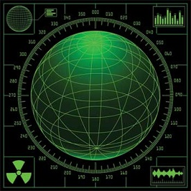

Business
Computer Fundamentals
A computer has high speed of calculation, diligence, accuracy, reliability, or versatility which has made it an integrated part in all business organizations.
Computer is used in business organizations for −
Payroll calculations
Budgeting
Sales analysis
Financial forecasting
Managing employee database
Maintenance of stocks, etc.
Banking
Computer Banking
Today, banking is almost totally dependent on computers.
Banks provide the following facilities −
Online accounting facility, which includes checking current balance, making deposits and overdrafts, checking interest charges, shares, and trustee records.
ATM machines which are completely automated are making it even easier for customers to deal with banks.
Insurance
Computer Insurance
Insurance companies are keeping all records up-to-date with the help of computers. Insurance companies, finance houses, and stock broking firms are widely using computers for their concerns.
Insurance companies are maintaining a database of all clients with information showing −
Procedure to continue with policies
Starting date of the policies
Next due installment of a policy
Maturity date
Interests due
Survival benefits
Bonus
Education
Computer Educational
The computer helps in providing a lot of facilities in the education system.
The computer provides a tool in the education system known as CBE (Computer Based Education).
CBE involves control, delivery, and evaluation of learning.
Computer education is rapidly increasing the graph of number of computer students.
There are a number of methods in which educational institutions can use a computer to educate the students.
It is used to prepare a database about performance of a student and analysis is carried out on this basis.
Marketing
In marketing, uses of the computer are following −
Computer Marketing
Advertising − With computers, advertising professionals create art and graphics, write and revise copy, and print and disseminate ads with the goal of selling more products.
Home Shopping − Home shopping has been made possible through the use of computerized catalogues that provide access to product information and permit direct entry of orders to be filled by the customers.
Healthcare
Computers have become an important part in hospitals, labs, and dispensaries. They are being used in hospitals to keep the record of patients and medicines. It is also used in scanning and diagnosing different diseases. ECG, EEG, ultrasounds and CT scans, etc. are also done by computerized machines.
Following are some major fields of health care in which computers are used.
Computer Healthcare
Diagnostic System − Computers are used to collect data and identify the cause of illness.
Lab-diagnostic System − All tests can be done and the reports are prepared by computer.
Patient Monitoring System − These are used to check the patient's signs for abnormality such as in Cardiac Arrest, ECG, etc.
Pharma Information System − Computer is used to check drug labels, expiry dates, harmful side effects, etc.
Surgery − Nowadays, computers are also used in performing surgery.
Engineering Design
Computers are widely used for Engineering purpose.
One of the major areas is CAD (Computer Aided Design) that provides creation and modification of images. Some of the fields are −
Computer Engineering
Structural Engineering − Requires stress and strain analysis for design of ships, buildings, budgets, airplanes, etc.
Industrial Engineering − Computers deal with design, implementation, and improvement of integrated systems of people, materials, and equipment.
Architectural Engineering − Computers help in planning towns, designing buildings, determining a range of buildings on a site using both 2D and 3D drawings.
Military

Computer Military
Computers are largely used in defence. Modern tanks, missiles, weapons, etc. Military also employs computerized control systems. Some military areas where a computer has been used are −
Missile Control
Military Communication
Military Operation and Planning
Smart Weapons
Communication
Communication is a way to convey a message, an idea, a picture, or speech that is received and understood clearly and correctly by the person for whom it is meant. Some main areas in this category are −
Computer Communication
E-mail
Chatting
Usenet
FTP
TelnetVideo-conferencing
Government
Computers play an important role in government services. Some major fields in this category are −
Computer Government
Budgets
Sales tax department
Income tax department
Computation of male/female ratio
Computerization of voters lists
Computerization of PAN card
Weather forecasting